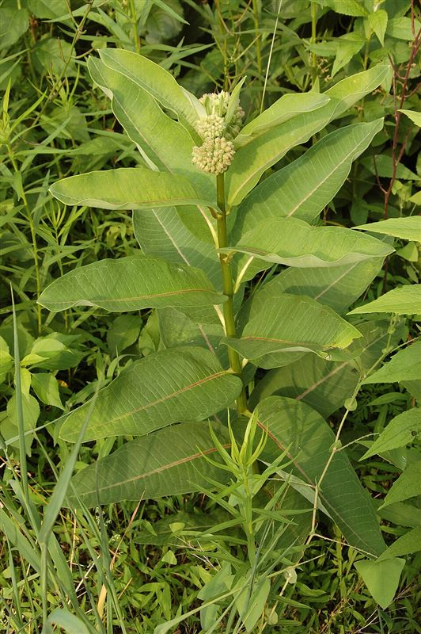
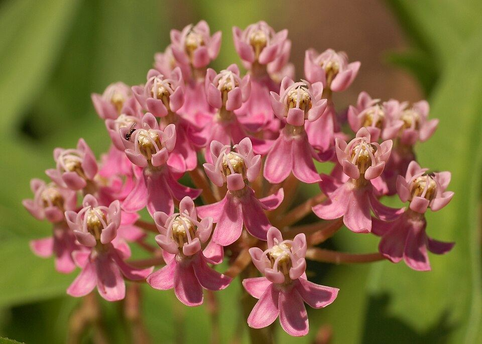

Plantas nutricias
Existen dos tipos de plantas fundamentales para las mariposas: las que alimentan a las orugas (plantas hospederas) y las que alimentan a los adultos (plantas con néctar).

Plantas hospederas
Son las plantas de las que se alimenta la oruga. Cada especie de mariposa suele depender de un grupo reducido de plantas hospederas, por eso son indispensables para completar el ciclo de vida en un lugar determinado.
Ejemplo: el algodoncillo (Asclepias spp.) es la planta hospedera de la mariposa monarca.

Plantas con néctar
Son las flores de las que se alimentan las mariposas adultas. A diferencia de las plantas hospederas, un mismo ejemplar adulto puede visitar muchas especies de flores distintas en busca de néctar.
Ejemplos: lavanda, algodoncillo de pantano, equinácea y otras flores silvestres de la región.
Tabla orientativa
| Planta | Función | Beneficia a |
|---|---|---|
| Algodoncillo (Asclepias syriaca) | Planta hospedera | Mariposa monarca (oruga) |
| Algodoncillo de pantano (Asclepias incarnata) | Planta con néctar | Mariposas adultas en general |
| Lavanda | Planta con néctar | Vanessa cardui y otras especies de jardín |
| Equinácea | Planta con néctar | Mariposas y otros polinizadores |
Antes de incorporar una especie vegetal, se recomienda verificar que sea nativa o adecuada para la región, para no favorecer especies invasoras.